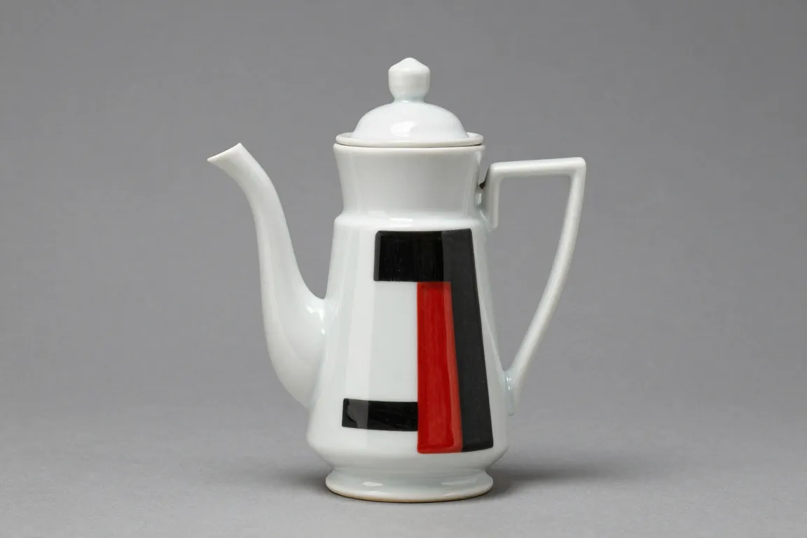

Чайная и кофейная посуда из белого фарфора Государственного фарфорового завода в Петрограде. Малевич и его ученики превратили простые формы супрематической живописи в горшки, чашки и кувшины из блоков, плоскостей и брусков.

Главная идея
Сосуд становится супрематическим предметом, когда его форма построена из цилиндров, кубов и плит, а краска на нём — плоская плоскость цвета.
Принципы дизайна
Стройте форму из простых тел: цилиндр, блок, плита и конус.
Держите поверхность белой, чтобы первой читалась форма.
Пишите плоские плоскости красным, чёрным и ещё одним цветом, с острыми краями.
Ставьте плоскости под углом к форме, как в живописи.
Делайте носик, ручку и крышку частью конструкции, а не украшением.
Отливайте форму в гипсовых формах повторяемой серией.
Не берите цветов, золочения и рельефа.
Обжигайте фарфор жёстко примерно до 1400 °C для плотной белой стенки.
Антипаттерны
Цветочная ветка или птица как главный декор
Мягкая круглая луковичная форма с изогнутой ручкой
Золочёный борт или фестончатый край
Цвета, смешивающиеся или бледнеющие на краю плоскости